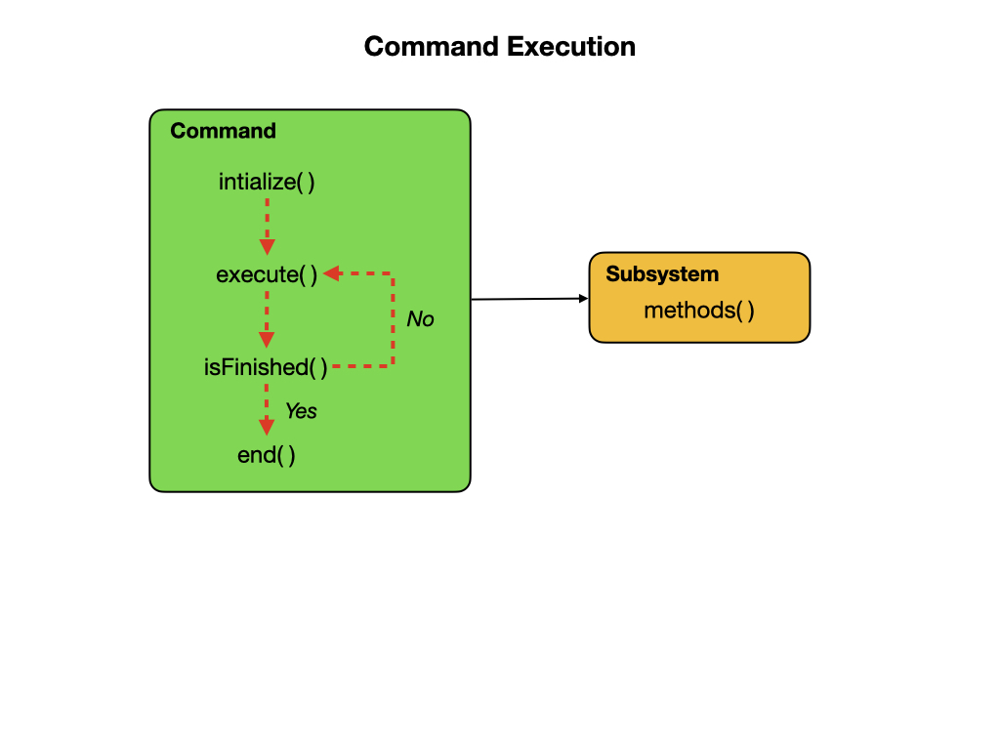

Commands
Commands define high-level robot actions or behaviors that utilize the methods defined by the subsystems. Before looking at the commands that are implemented on the Robot you should be very familiar with Procedures and State Machines from the programming sections. You should also review the FRC Documentation on Commands before continuing.
A command is a simple State Machine that is either Initializing, Executing, Ending, or Idle. Users write code specifying which action should be taken in each state. Commands run when scheduled, or in response to buttons being pressed on a gamepad or from Shuffleboard. After running the initialize() function, each command will enter its execute() phase where it runs code to accomplish its task. The method isFinished() determines if the task has been completed, after which it runs the end() function to clean things up. The execute() and isFinished() methods are called repeatedly by the main robot loop.
The Intake Command
Let’s begin by taking a look at the Intake Command. The IntakeCommand extends the WPILIB Command. This gives us all the default methods that come with a WPILIB Command. We include a Joystick object to allow us to test if a button is being held down. Then we add a variable for an instance of the Intake subsystem and finally we add a variable to set when we are done with the command.
Note
You would normally NOT include a Joystick object in a command. This is just for training purposes and would be considered a Bad Practice to do so in your robot code. This is a shortcut for illustration purposes only!
/** An Intake command that uses the Intake subsystem. */
public class IntakeCommand extends Command {
@SuppressWarnings({"PMD.UnusedPrivateField", "PMD.SingularField"})
private static Joystick driverJoystick = new Joystick(0);
private final Intake m_subsystem;
private boolean isFinishedFlag = false;
Next we define the constructor. Notice that whoever calls this command is passing in an instance of the Intake Subsystem. The addRequirements(subsystem) method stops any other command from executing with the subsystem. You would not want multiple commands to the same motor going on at the same time.
public IntakeCommand(Intake subsystem) {
m_subsystem = subsystem;
// Use addRequirements() here to declare subsystem dependencies.
addRequirements(subsystem);
}
Now we add the methods that are specific to Commands, these are automatically called ny the Command Scheduler (more about that in a few minutes). As mentions previously, the functions are:
Initialize - What do you want to do when the command starts up.
Execute - What do you want to happen each loop (approximately every 20ms)
End - What do you want to happen at the end of your command
isFinished - A test for if you want to end the command
Let’s look at the Initalize and End methods:
// Called when the command is initially scheduled.
@Override
public void initialize() {}
// Called once the command ends or is interrupted.
@Override
public void end(boolean interrupted) {}
These are very boring as nothing is happening. So for the Intake Command there is nothing that we want to do on Command Startup or Shutdown. Ok, let’s take a look at the execute method:
// Called every time the scheduler runs while the command is scheduled.
@Override
public void execute() {
if(driverJoystick.getRawButton(3)){
m_subsystem.runVelocity(IntakeConstants.kIntakeSpeed);
System.out.println("Intaking...");
isFinishedFlag = false;
}else{
m_subsystem.stop();
System.out.println("Intake Idle...");
isFinishedFlag = true;
}
}
The only thing this method does is to check and see if the X button is being pressed on the controller. If it is, then it calls the Intake Subsystem and runs the runVelocity method passing in a constant from the IntakeConstants File. If the X button is not being pressed, then it calls the Intake Subsystem and runs to stop method to stop the motor and sets the isFinishedFlag variable to true, indicating that we want to end the command.
Now, let look at the isFinished method:
// Returns true when the command should end.
@Override
public boolean isFinished() {
return isFinishedFlag;
}
Notice that this code block is returning a boolean. That boolean is sent to Command Scheduler indicating that we want to stop the command.
That’s it. You have walked through your first command. ALL commands follow this format.
Embedded Commands
Another way to define a command is to embed them within the subsystem they are using. For example if we look to the Intake Subsystem you will find an Intake Command that is functionally equivalent to the one described above:
/**
* Set command to Intake
*
* @return a command
*/
public Command IntakeCommand() {
// Subsystem::RunOnce implicitly requires `this` subsystem.
return runOnce(
() -> {
/* one-time action goes here */
flipState(State.INTAKE);
});
}
There is nothing to do on Initialize() or End(), so the command runs a single time and then finishes. This is much shorter to code that an entire Java class.
The Command Scheduler
The CommandScheduler is the class responsible for actually running commands. Each iteration (ordinarily once per 20ms), the scheduler polls all registered buttons, schedules commands for execution accordingly, runs the command bodies of all scheduled commands, and ends those commands that have finished or are interrupted.
The CommandScheduler also runs the periodic() method of each registered Subsystem.
You must include the Command Scheduler in your robot code, usually in the robotPeriodic method. This will ensure that the Command Scheduler is run on each loop.
@Override
public robotPeriodic() {
/* Run the command Scheduler */
CommandScheduler.getInstance().run();
}
The setDefault Command
The setDefaultCommand() method sets the default command for the subsystem. The default command will always be running when no other commands are scheduled for that subsystem. The following statement is called in the RobotContainer class to schedule the default command for the Drivetrain.
drivetrain.setDefaultCommand
(drivetrain.run(() -> {
drivetrain.teleopDrive(
Math.abs(driver.getLeftY()) >= 0.0 ? -driver.getLeftY() : 0,
Math.abs(driver.getLeftX()) >= 0.0 ? -driver.getLeftX() : 0,
Math.abs(driver.getRightX()) >= 0.015 ? -driver.getRightX() : 0);
}
));
Instant Commands
An Instant Command works similarly to a regular command except that there is no execute() method and the isFinished() method always returns true. The main purpose of Instant Commands commands is to quickly alter some robot state such as activating, deactivating, or resetting a subsystem. Instant Commands are used quite often.
public class RobotContainer {
private final HatchSubsystem m_hatchSubsystem = new HatchSubsystem();
public RobotContainer() {
// Bind a button to grab the hatch instantly
new JoystickButton(m_driverController, Button.kA.value)
.whenPressed(new InstantCommand(m_hatchSubsystem::grabHatch, m_hatchSubsystem));
// Bind another button to release the hatch instantly
new JoystickButton(m_driverController, Button.kB.value)
.whenPressed(new InstantCommand(m_hatchSubsystem::releaseHatch, m_hatchSubsystem));
}
}
Command Groups
Simple commands can be composed into Command Groups to accomplish more complicated tasks. There are several ways in which Command Groups can be composed, as shown the documentation. Here is an example:
public class PlaceSoda extends SequentialCommandGroup {
public PlaceSoda() {
addCommands(
new SetElevatorSetpoint(Elevator.TABLE_HEIGHT), // Sets elevator to table height
new SetWristSetpoint(Wrist.PICKUP), // Sets wrist to pickup position
new OpenClaw() // Opens the claw to release
);
}
Complex Commands
Using the short cuts to write Commands can result in very fast, but very complex code. Here is an example from our 2024 Competition robot. This command would move the robot arm and elevator to level 4, Score the Coral, retract the arm and elevator to move away from the reef. Then deploy the ground intake, move the elevator and arm to intake position until the intake beam break sensor indicates that we have a new coral. A lot of action for a few lines of code.
public Command autonShootIntake() {
return
Commands.sequence(
runOnce(() -> {doneScoring = true;}),
armSubsystem.L4Score().withTimeout(0.75),
Commands.parallel(
manipulatorSubsystem.L4Spit()
.andThen(Commands.waitSeconds(.5))
.andThen(manipulatorSubsystem.zero())
.andThen(manipulatorSubsystem.goScore()),
armSubsystem.horizontal(),
intakeSubsystem.deploy(),
elevatorSubsystem.intakeCoral()
).until(() -> intakeSubsystem.getBeamBreak())
);
}
Lab - Commands
This lab continues with the one that you worked on in the Subsystems section of the training guide. You’ll learn about the following Java programming concepts:
Create a new Command or Subsystem in VSCode.
Java Inheritance where a class inherits attributes and methods from one class to another.
Method Parameters the syntax used to pass parameters to methods.
There are two tasks for this lab:
???
References
FRC Documentation - Command Based Programming
FRC Documentation - The Command Scheduler
FRC Documentation - Command Groups
Java Tutorial on W3Schools